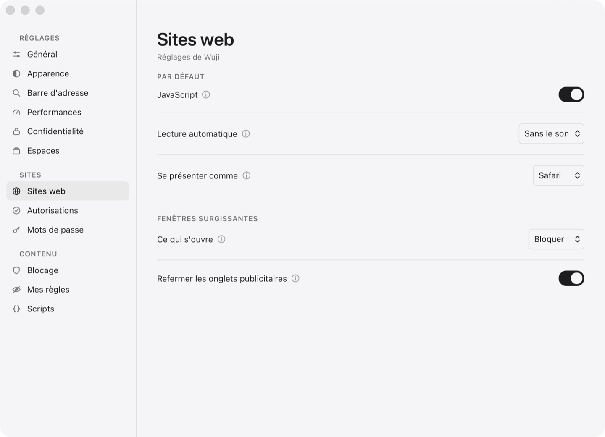
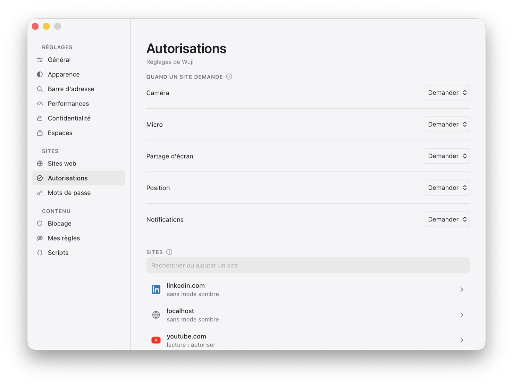

WujiSites et sécurité
Sites et sécurité
Des réglages pour tous les sites, et pour celui qu'on regarde. Un site sans réglage à lui suit ceux de tous, même quand ils changent.
Réglages par site

Pour tous, puis pour chacun
JavaScript, fenêtres surgissantes, lecture automatique, pour tous les sites ; puis la liste des sites qui ont les leurs, chacun effaçable. « Réglages pour ce site », dans le menu du cadenas, règle celui qu'on regarde.
Lecture automatique « sans le son »
Par défaut, comme Safari : une vidéo sonore attend, une muette joue ; « Jamais » arrête les deux.
JavaScript coupé pour un site
Les scripts de la page ne s'exécutent plus. Les pages de Wuji gardent le leur, quoi qu'on règle.
Se présenter comme
Safari, Chrome ou Firefox, pour les sites qui refusent ce qu'ils ne reconnaissent pas. Le moteur reste WebKit.
Zoom et mode sombre
Le zoom de chaque site est retenu, et le mode sombre s'éteint pour un site qui rend mieux tel quel.
Autorisations et notifications

Caméra, micro, position
Demandées une fois, retenues, révocables. La position passe par deux portes : le site vous demande, et macOS demande à Wuji — Wuji vous dit laquelle manque. Seul l'onglet qu'on regarde peut demander.
Dans le Centre de notifications
Un site demande une fois ; la réponse est retenue avec les autres. Un clic ramène à l'onglet qui l'a envoyée, et le site est écrit sous le titre, pour qu'aucune ne se fasse passer pour une autre. Seulement d'une page chiffrée : réécrite sur un Wi-Fi public, une page en clair ne notifie pas au nom du site.
Même celles que WebKit perdait
WebKit ne remet pas à l'application les notifications de Gmail, Slack ou Discord. Wuji les relaie — la permission reste celle de WebKit, et l'origine du cadre est vérifiée. Rien en fenêtre privée.
Les questions, au même endroit
Caméra, position, installer un script, enregistrer un mot de passe : une bulle en bas à droite. Fermer sans répondre vaut « non ». Une seule à la fois, jamais remplacée sous le curseur, et un oui donné dans la première demi-seconde ne compte pas.
Le cadenas et les certificats
Deux lignes, cinq portes
L'essentiel se lit sans cliquer : avec qui la connexion est chiffrée, et qui l'atteste. Le reste attend derrière son groupe — Identité, Validité, Chiffrement, Empreinte SHA-256, Chaîne de confiance —, et chaque ligne se copie d'un clic.
Les certificats que personne n'atteste
L'ordinaire d'un service qu'on héberge soi-même. La page d'erreur montre le certificat et son empreinte SHA-256, puis propose de continuer — pour cet hôte et cette session seulement, jamais écrit sur le disque.
L'adresse de la page qu'on voit
Une page qui lance elle-même une navigation n'en affiche l'adresse qu'à l'arrivée : un script ne peut pas poser « banque.fr » au-dessus de son propre contenu. Un clic, un retour ou une adresse tapée s'affichent tout de suite.
Téléverser un fichier
Un champ « choisir un fichier » ouvre le panneau du système en feuille sur la fenêtre, avec ses favoris et sa recherche.